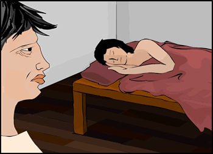

|

Dienekes was now a grown man and soldier of Sparta. He had completed the agoge himself. He knew very well how Sparta remained constantly alert to the threat of the Helots. And now his son would follow the same path and become a soldier, so to protect Sparta in the future. It seemed that Sparta had always been a fighting machine, but Dienekes' grandfather had shown him that there was more to Sparta than soldiers and war... | |
| ...previous | next... |